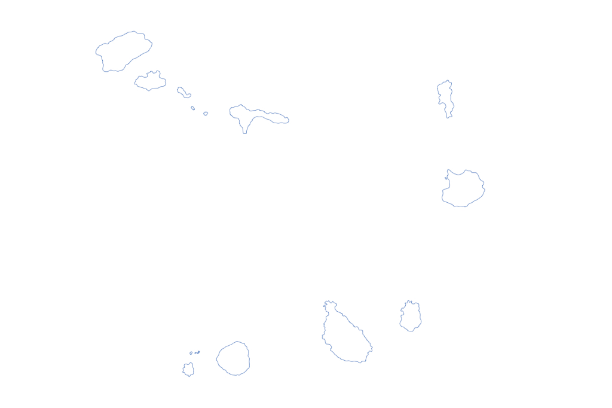
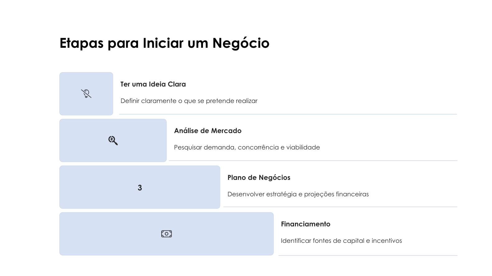
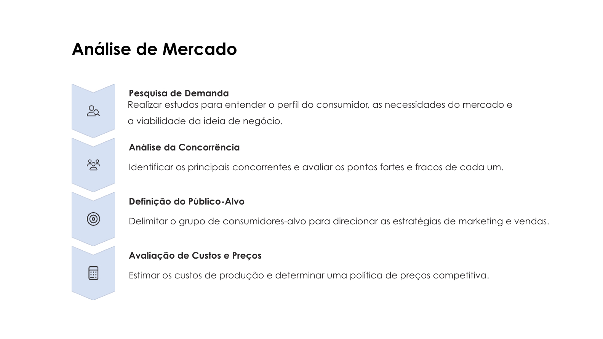
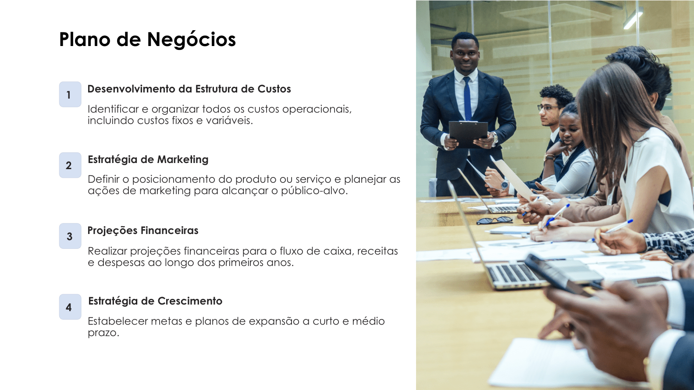
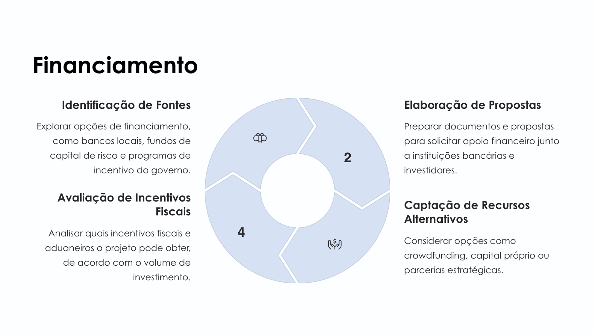
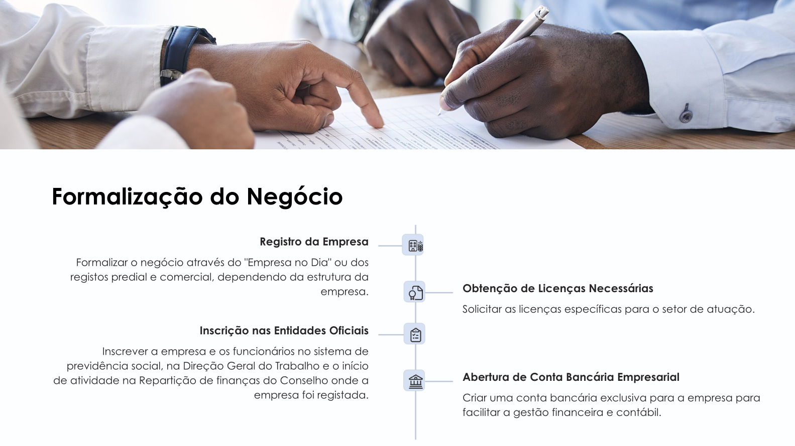
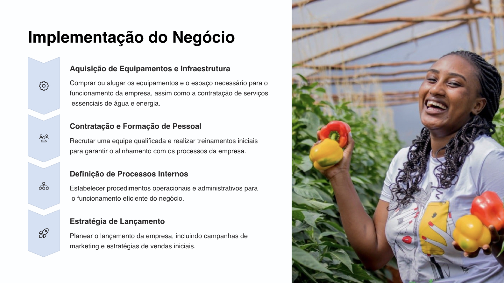
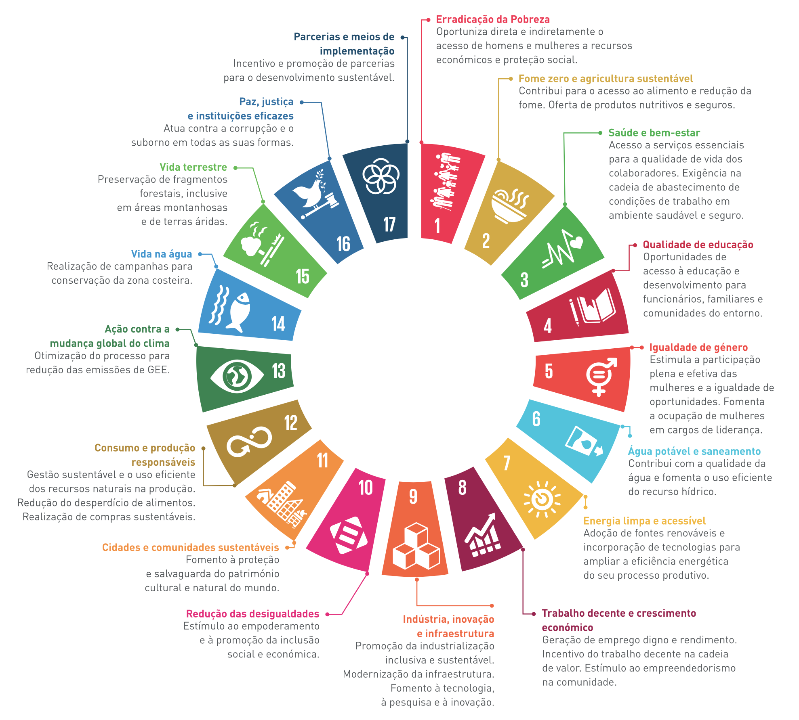

Faça o Download do Guia
Obtenha a versão completa do "Guia do Investidor da Diáspora" para aceder a todas as informações detalhadas, contactos e recursos necessários.
Gostarias de investir em Cabo Verde? Então estás no lugar certo! Este site apresenta o Guia do Investidor da Diáspora, criado para ajudar-te a transformar ideias em negócios. Descobre oportunidades de investimento, incentivos do governo e orientações práticas para investir com segurança e contribuir para um desenvolvimento sustentável em Cabo Verde.
Fazer Download do GuiaCabo Verde tem um ambiente de negócios atrativo e propício ao investimento, com diversas vantagens estratégicas que fortalecem a confiança dos investidores:
Situado no cruzamento entre Europa, África e América, Cabo Verde é um ponto de conexão para comércio e negócios internacionais.
O país é reconhecido pela sua democracia consolidada, paz social e governança estável, fatores fundamentais para a segurança do investimento.
Investimentos contínuos em portos, aeroportos, estradas e redes energéticas garantem boas condições para o desenvolvimento empresarial.
A moeda nacional (Escudo Cabo-verdiano) está indexada ao Euro, proporcionando estabilidade cambial para investidores estrangeiros.
Cabo Verde possui um clima tropical moderado e estável ao longo do ano, sem registro de epidemias ou riscos significativos à saúde pública.
Políticas económicas permitem a transferência de fundos e repatriação de capitais sem restrições, favorecendo investimentos internacionais.
O país mantém um forte compromisso com o Estado de Direito, promovendo um ambiente seguro e previsível para negócios.
Cabo Verde conta com uma população jovem e capacitada, com crescente qualificação técnica e profissional, tornando-se um atrativo para setores inovadores e tecnológicos.
O Estatuto de Investidor da Diáspora é uma certificação oferecida pelo Governo de Cabo Verde para reconhecer e facilitar investimentos de cabo-verdianos residentes no exterior. Este estatuto proporciona uma série de benefícios fiscais, aduaneiros e administrativos, permitindo que a diáspora participe ativamente no desenvolvimento económico do país e aceda a condições vantajosas para iniciar e expandir negócios.
Na aquisição de imóveis para instalação de projetos.
Em contratos de financiamento e operações de crédito.
Na importação de bens e equipamentos necessários para o projeto.
O Estado comparticipa até 50% dos custos de formação no primeiro ano de atividade.
Incentivos fiscais extras poder ser aplicados a projetos em áreas de menor desenvolvimento económico, incluindo apoio logístico e finaceiro.
Explore as oportunidades únicas de Cabo Verde, de Santo Antão a Brava. Clique nos pontos do mapa para descobrir como recursos naturais e potencial económico podem transformar visões empresariais em realidade.

O microclima, o solo fértil e disponibilidade de água em várias ribeiras em S. Antão conferem um potencial destacado à produção agrícola. Desenvolvimento de cadeias de valor para produtos agrícolas e agroindustriais.
Expansão da oferta de trilhas e roteiros para turistas interessados na natureza.
Investimentos na valorização do café local, fortalecendo sua comercialização internacional.
Desenvolvimento de projetos de energia solar e eólica para abastecimento local e exportação de energia.
Criação de unidades de processamento e armazenamento de pescado para exportação e hotelaria em Cabo Verde.
Apoio à produção cultural, eventos, música e artes para fomentar o setor criativo da ilha.
A ilha possui uma forte tradição pesqueira, com recursos marinhos importantes. Há potencial para investimentos em processamento e exportação de pescado, incluindo a criação de instalações modernas de armazenamento e embalagem para mercados externos e a hotelaria e restauração no país.
O terreno fértil em áreas específicas da ilha permite a produção de frutas e horticultura de alta qualidade. Investimentos em tecnologias agrícolas modernas podem aumentar a produtividade e a resiliência das culturas.
A beleza natural de São Nicolau, com trilhas ecológicas e paisagens montanhosas, oferece oportunidades para o desenvolvimento de ecoturismo e turismo de aventura. Empreendimentos que promovam a sustentabilidade ambiental, como alojamentos ecológicos, têm grande potencial.
Desenvolvimento de resorts de alto padrão, spas de bem-estar, experiências gastronômicas exclusivas e atividades personalizadas para turistas de alto poder aquisitivo.
Expansão de serviços voltados para kitesurf, mergulho e passeios de iate, aproveitando as condições naturais únicas da ilha.
Criação de centros de eventos e conferências de padrão internacional, com foco em captar um segmento diferenciado de turistas.
Desenvolvimento de resorts de grande escala, capazes de acomodar grandes volumes de turistas com ofertas de pacotes “tudo incluído”.
Criação de atrações como parques aquáticos, centros culturais e experiências interativas que diversifiquem a oferta turística e atrai famílias.
Organização de grandes eventos, festivais de música e competições desportivas que utilizem a infraestrutura e os recursos naturais da ilha.
Projetos de energia solar e eólica, aproveitando os recursos naturais da ilha.
Desenvolvimento de eco-lodges e experiências de turismo de natureza.
Modernização das práticas pesqueiras e criação de unidades de processamento para o mercado doméstico, com especial interesse para o mercado hoteleiro, assim como a exportação.
Santiago é uma ilha com solo fértil e grande população, sendo ideal para investimentos em agricultura e transformação de produtos hortícolas e frutícolas.
Com forte herança histórica e cultural, Santiago oferece oportunidades no desenvolvimento de turismo cultural e rural.
A ilha de Santiago, como centro administrativo e económico de Cabo Verde, apresenta um vasto potencial para o desenvolvimento do setor de Tecnologias de Informação e Comunicação (TIC). A capital, Praia, a partir da Tech Park e das várias faculdades de ciência e tecnologia, é o núcleo estratégico para a implementação de soluções tecnológicas que podem impulsionar a digitalização do país e da emergente região da África Ocidental.
Oportunidades na criação de infraestruturas e pacotes turísticos voltados para o turismo de aventura e exploração do vulcão.
Expansão da produção de vinhos locais de alta qualidade, com potencial para exportação e desenvolvimento do enoturismo.
Desenvolvimento de cadeias de valor em produtos agrícolas adaptados ao solo vulcânico, como café e frutas tropicais, com foco na exportação e abastecimento do setor hoteleiro.
Desenvolvimento de culturas agrícolas adaptadas ao clima local, com foco em exportação e segurança alimentar.
Investimentos em ecoturismo e alojamentos sustentáveis para explorar o potencial natural da ilha.
Criação de viveiros para cultivo de plantas exóticas e medicinais para mercados locais e internacionais.
O processo de investimento em Cabo Verde é estruturado para ser transparente e seguro. Deslize para ver as etapas e consulte os recursos disponíveis para garantir o sucesso do seu projeto.






Guiados pelos valores da integridade, o objetivo dos seguintes princípios orientadores para a valorização das pessoas, do trabalho e das empresas, é adotar uma linha comum sobre medidas e iniciativas destinadas a melhorar a valorização dos investimentos em Cabo Verde
Conheça aqui o enorme potencial da contribuição do Sector Privado para o alcance da Agenda 2030 da ONU

"É preciso planear, ter muita força de vontade, determinação, coragem e ir 'com tudo'. O que nos move é o amor a esta terra que nos faz enfrentar seus desafios."
"Criei em 2010 uma empresa que hoje é a maior empresa cabo-verdiana no setor tecnológico e emprega mais de 20 pessoas de forma direta e 50-60 de forma indireta. Temos um potencial enorme de crescimento dado que operamos na área da infraestruturação do país. A mola propulsora dos negócios que criamos foi o desejo de ajudar no desenvolvimento do país onde nasci."
"Incentivo todas as pessoas a investir no país por causa do potencial existente e o largo espectro de oportunidades. Encorajo que façam o trabalho de campo, que falem com as pessoas e identifiquem as oportunidades."
Instituições públicas essenciais para facilitar o investimento da diáspora em Cabo Verde, oferecendo serviços especializados e apoio institucional.
Clique para ver mais informações
Missão: Regulação e apoio aos diversos setores económicos através de Direções Gerais e Institutos Públicos.
Câmaras: www.ccb.cv | www.ccs.cv
Clique para ver mais informações
Missão: Facilitar e acreditar o investimento da diáspora em Cabo Verde, promovendo a integração dos investidores no exterior.
Website: www.mdc.gov.cv

Clique para ver mais informações
Missão: Um lugar para conectar Cabo Verde com a sua comunidade no mundo.
Boston, Lisboa, Praia, Santa Catarina, Tarrafal, Maio, e outros municípios.
Website: www.investidordadiaspora.cv

Clique para ver mais informações
Missão: Coordenar o processo de investimento, receção, análise e contratualização dos projetos.
Website: www.cvtradeinvest.com
Clique para ver mais informações
Missão: Apoiar a criação e desenvolvimento de pequenas e médias empresas.
Website: www.proempresa.cv
Clique para ver mais informações
Missão: Fornecer soluções de capital de risco para projetos inovadores.
Website: www.procapital.cv
Obtenha a versão completa do "Guia do Investidor da Diáspora" para aceder a todas as informações detalhadas, contactos e recursos necessários.